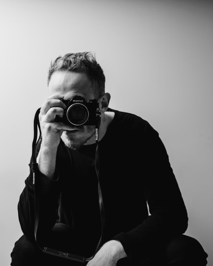

Работать с фототехникой
Создавать цепляющие кадры
Выставлять свет
Проводить профессиональные съёмки
Обрабатывать фотографии
Работать с клиентами
Фотограф
“Вы не фотографируете, вы создаете”
Советы начинающему фотографу
Всегда проверяйте настройки фотоаппарата
Можно отснять сотню кадров и думать, что с ними все прекрасно, а потом внезапно обнаружить, что выдержка была слишком медленной, режим — неподходящим, а ISO — чересчур высоким. Поэтому запомните и запишите: прежде чем нажать на спусковую кнопку, проверьте настройки и убедитесь, что они правильные.
Делайте акцент на глазах
Когда будете снимать потрет, старайтесь, чтобы глаза человека всегда были в фокусе, ведь это самая выразительная часть его лица, пресловутое «зеркало души». Сумеете поймать взгляд объекта и показать его характер — получите отличный снимок.
Не стойте на месте
Запомните: хороший фотограф не должен стоять как вкопанный. Ваша задача — найти лучший ракурс, а для этого бывает нужно наклониться, забраться повыше, лечь на землю, подбежать поближе, отойти подальше и т.д. Хорошая физическая форма — наше все!
Фон — это важно
Когда будете размышлять над композицией — не забудьте обратить внимание на фон, ведь он важен ничуть не меньше, чем сам объект съемки. Размытый или резкий, гладкий или фактурный — фон может быть каким угодно, если он вписывается в кадр и не разрушает снимок.
Больше практики
Заметный прогресс наступит только тогда, когда вы возьмете в руки фотоаппарат и начнете практиковаться. Со временем у вас появится и свой стиль, и своя техника, но для этого надо не лениться и фотографировать все подряд.
10 лучших бесплатных программ для редактирования фотографий
основные навыки фотографа
Работать с фототехникой
Создавать цепляющие кадры
Выставлять свет
Проводить профессиональные съёмки
Обрабатывать фотографии
Работать с клиентами